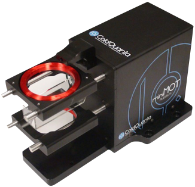

Atom Trapping
We operate a magneto-optical trap (MOT) that is capable of cooling and trapping Rubidium atoms.

miniMOT
The miniMOT is the first turn-key commercial product for creating cold atoms. We installed ours in 2009 and have been cooling and trapping Rubidium since then.
Anisotropic MOT
We create an anisotropic atom cloud; one that is much longer than it is wide. We then study the interactions between laser light and this long, narrow cloud of atoms.

Diode Lasers
We use three homebuilt diode lasers based on a proven design that can be assembled for roughly $500 in parts.
Watch Tour